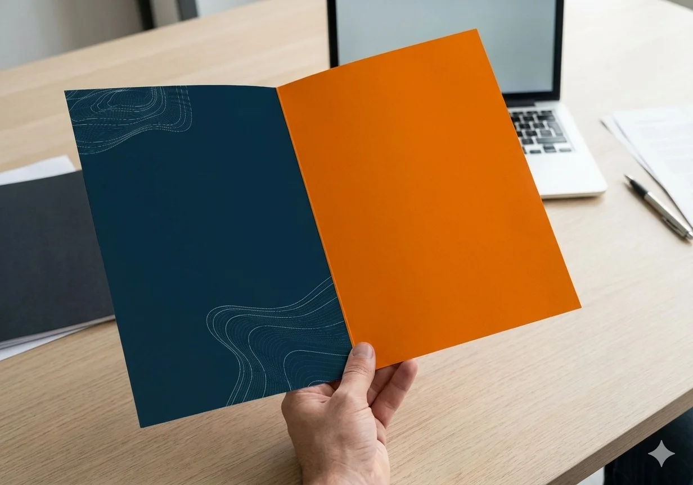

Leitura e representação precisa das características do terreno para apoiar projetos, planejamento e execução.
BEM TOPOGRAFIA E ENGENHARIAPOUSO ALEGRE · MG
PRECISÃO PARA
TRANSFORMAR
TERRITÓRIOS.
Topografia e engenharia aplicadas ao planejamento, desenvolvimento e execução de projetos com precisão técnica.
ROLAR PARA EXPLORARTERRENO → DADO
01BEM TOPOGRAFIA E ENGENHARIA
ANTES DE CONSTRUIR,
É PRECISO ENTENDER.
Cada terreno carrega informações essenciais para uma decisão segura. A topografia transforma o espaço físico em dados precisos que orientam projetos, regularizações, obras e planejamento.
É nesse encontro entre território, tecnologia e engenharia que a BEM atua.
02O QUE FAZEMOS
DO TERRENO
AO PROJETO.
Conteúdo provisório e editável até a BEM fornecer a lista oficial completa de serviços.
Informações espaciais organizadas com precisão para identificação, análise e documentação de áreas.
Transferência precisa das informações do projeto para o terreno durante as diferentes etapas da execução.
Apoio técnico nos levantamentos e documentos necessários aos processos de regularização.
Soluções técnicas desenvolvidas de acordo com as características e necessidades de cada projeto.
Análise técnica para apoiar decisões desde os primeiros estudos até a execução.
03PRINCÍPIOS
PRECISÃO NÃO É UM DETALHE.
É O PONTO DE PARTIDA.
Precisão
Dados confiáveis para decisões mais seguras.
Tecnologia
Ferramentas e métodos aplicados à leitura do território.
Planejamento
Informações organizadas para reduzir incertezas no projeto.
Acompanhamento
Suporte técnico durante as diferentes etapas do trabalho.
04PROCESSO
COMO TRANSFORMAMOS
TERRITÓRIO EM INFORMAÇÃO.
Entender
Análise inicial da necessidade e características do projeto.
Medir
Levantamento das informações necessárias em campo.
Processar
Organização e interpretação técnica dos dados coletados.
Projetar
Transformação das informações em documentação e soluções técnicas.
Entregar
Material organizado para apoiar decisões, projetos e execução.
MEDIDA / EIXO / CONTROLECADA CENTÍMETRO
CADA CENTÍMETRO
CONTA.
Precisão técnica para decisões que vão muito além da medida.
05PROJETOS
ALGUNS TERRITÓRIOS
CONTAM MELHOR NOSSA HISTÓRIA.
Estrutura preparada para receber projetos reais. Nenhum cliente, obra ou case foi inventado.
06A BEM
BEM É ENTENDER
ANTES DE EXECUTAR.
A BEM Topografia e Engenharia atua em Pouso Alegre e região oferecendo soluções técnicas voltadas à compreensão, planejamento e desenvolvimento de projetos.
Combinamos conhecimento técnico, tecnologia e precisão para transformar informações do território em decisões mais seguras.

07CONTATO
SEU PROJETO
COMEÇA PELO TERRENO.
Conte para a BEM o que você precisa.
ATENDIMENTOPOUSO ALEGRE · MG
Falar pelo WhatsApp Entre em contato para conversar sobre seu projeto e entender como a BEM pode ajudar.